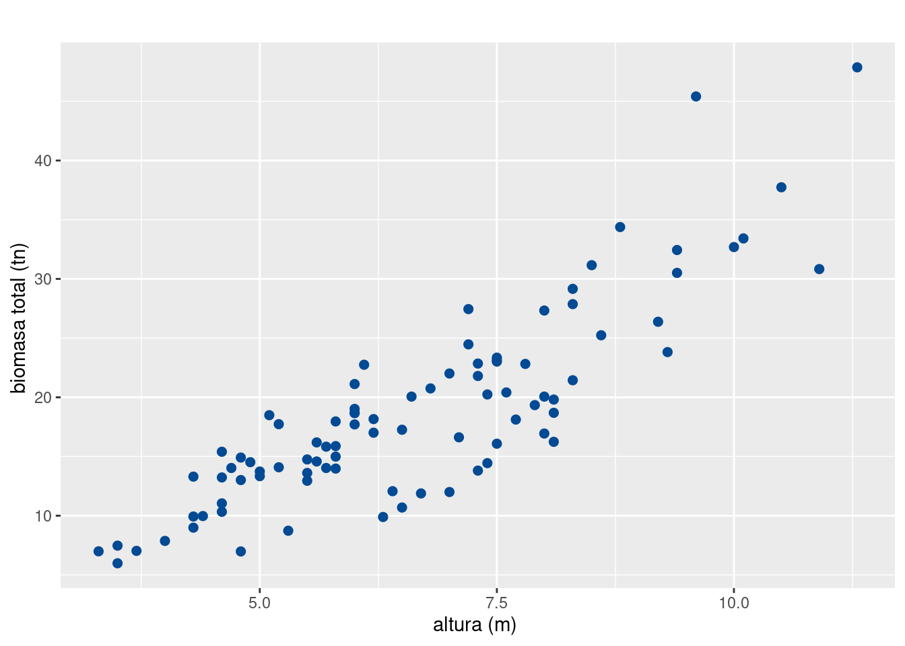

Para una selección preliminar de la variable predictora en un modelo de regresión simple (o sea que considera una sola variable predictora) es conveniente realizar el diagrama de dispersión \({Y}\) vs. \({X}\) y mirar si existe una tendencia lineal en la nube de puntos.

Gráfico 1 : Diagrama de dispersión altura - biomasaSi la nube de puntos parece mejor ajustada por una curva hay que buscar una transformación apropiada en \({X}\) y/o \({Y}\) que lleve a un modelo lineal; en este caso el modelo de regresión lineal a ajustar será:
\[{Y^{*}\vert X^{*}_{i}=\beta_0 + \beta_1 X^{*}_{i} + \varepsilon_{i}, i=1,2,\ldots,n}\]
Donde \({Y^*}\) y \({X^*}\) son las variables \({Y}\) y \({X}\) transformadas. Más adelante se ampliará el tema de transformaciones que llevan a un modelo lineal.
Debe tenerse claro que el método de mínimos cuadrados es un método numérico, no estadístico. La estadística opera a partir de los supuestos distribucionales asignados en el modelo de regresión.
Obtener estimaciones de los parámetros de regresión, es decir hallar valores de \({\beta_0}\) y \({\beta_1}\) que minimicen la suma de los cuadrados de los errores \({S(\beta_0,\beta_1)}\)
\[ S(\beta_0,\beta_1) = \sum^n_{i=1} \varepsilon^2_i = \sum^n_{i=1} \Big[Y_i - (\beta_0 + \beta_1X_i)\Big]^2 \]
A los valores que minimizan esta expresión se les conoce como estimadores de mínimos cuadrados y se les denota \({\widehat{\beta}_0}\) y \({\widehat{\beta}_1}\).
Dados los pares de observaciones \({(x_1, y_1),\ldots,(x_n, y_n)}\), hallar \({\beta_0}\) y \({\beta_1}\) que minimicen a \({S(\beta_0,\beta_1)}\) implica resolver el siguiente sistema de ecuaciones:
\[ {\left.\frac{\partial S(\beta_0,\beta_1)}{\partial \beta_0}\right|_{\widehat{\beta}_0,\widehat{\beta}_1}=0} \]
\[ {\left.\frac{\partial S(\beta_0,\beta_1)}{\partial \beta_1}\right|_{\widehat{\beta}_0,\widehat{\beta}_1}=0} \]
De lo cual surgen las denominadas ecuaciones normales:
\[ {\sum^{n}_{i=1}y_i=n\widehat{\beta}_0+\widehat{\beta}_1\sum^{n}_{i=1}x_i} \]
\[ {\sum^{n}_{i=1}{x_iy_i}=\widehat{\beta}_0\sum^{n}_{i=1}x_i+\widehat{\beta}_1\sum^{n}_{i=1}x^2_i} \]
Y de éstas se obtiene que las estimaciones por mínimos cuadrados de los parámetros son:
\[ {\widehat{\beta}_0=\bar{y}-\widehat{\beta}_1\bar{x}} \]
\[ \begin{aligned} {\widehat{\beta}_1}&=&{\frac{\sum\limits^n_{i=1} x_i \, y_i - \frac{\sum\limits^n_{i=1} x_i \, \sum\limits^n_{i=1} y_i}{n}} {\sum\limits^n_{i=1} x^2_i - \frac{\left(\sum\limits^n_{i=1} x_i\right)^2}{n}} = \frac{\sum\limits^n_{i=1} x_i \, y_i - n\,\bar{x} \, \bar{y}}{\sum\limits^n_{i=1} x^2_i - n\,\bar{x}^2}} \nonumber\\[0.5cm] &=& {\frac{\sum\limits^n_{i=1} (x_i-\bar{x}) (y_i-\bar{y})} {\sum\limits^n_{i=1} (x_i-\bar{x})^2} = \frac{\sum\limits^n_{i=1} y_i\, (x_i-\bar{x})} {\sum\limits^n_{i=1} (x_i-\bar{x})^2}} \end{aligned} \]
NOTA:
\({\widehat{\beta}_1}\) puede ser expresado en función de \({S_{xy}}\) y de \({S_{xx}}\) así:
\[ {\widehat{\beta}_1=\frac{S_{xy}}{S_{xx}}} \]
Ejemplo
Usaremos la variable peso como una variable proxis de la variable biomasa para calcular los parámetros \(\beta_{0}\) y \(\beta_{1}\) de dos formas diferentes utilizando los valores encontrados y utilizando los conceptos de varianza y covarianza.
data(arboles)
y=as.numeric(arboles$peso)
x=as.numeric(arboles$altura)
Sxy=sum((x-mean(x, na.rm = TRUE))*(y-mean(y, na.rm = TRUE)))
Sxx=sum((x-mean(x))^2)
(b1 = Sxy/Sxx)[1] 3.890556(b0 = mean(y) - b1*mean(x))[1] -7.045564n=90
Syy=var(y)*(n-1) # Syy
Sxx=var(x)*(n-1) # Sxx
Sxy=cov(x,y)*(n-1) # Sxy
(b1 = Sxy/Sxx)[1] 3.890556(b0 = mean(y) - b1*mean(x))[1] -7.045564lm(y ~ x)
Call:
lm(formula = y ~ x)
Coefficients:
(Intercept) x
-7.046 3.891 Al tener estimados los parámetros del modelo de regresión lineal simple (por mínimos cuadrados o máxima verosimilitud), entonces se puede realizar una estimación de la respuesta media \(E\left[Y \vert X\right] = \mu_{Y\vert X}\), a través del modelo ajustado, así: \[ \widehat{\mu}_{Y\vert x_i} = \widehat{y}_i = \widehat{\beta}_0 + \widehat{\beta}_1\, x_i = \bar{y} + (x_i-\bar{x})\,\widehat{\beta}_1. \]
A esta ecuación se le conoce como la ecuación de regresión ajustada, que en este caso corresponde a una recta ajustada.
A las diferencias entre los valores observados de la respuesta \(y_i\) y los valores ajustados por el modelo de regresión \(\widehat{y}_i\) (obtenidos de la ecuación de regresión ajustada) se les conoce como los residuales del modelo. Esto es, \({e_i=y_i-\widehat{y}_i}\) es el \(i\)-ésimo residual del modelo, que es una estimación del \(i\)-ésimo error aleatorio, \(\varepsilon_i\).
Los residuales del modelo tienen gran importancia ya que ellos determinan que tan bueno fue el ajuste del modelo y permitirán más adelante realizar las validaciones de los supuestos realizados sobre los errores aleatorios.
Bajo los supuestos considerados respecto a los errores tenemos que:
P1. \({\widehat\beta_0}\) y \({\widehat\beta_1}\) son combinaciones lineales de las variables aleatorias \({Y_1, \ldots, Y_n}\), pues estos pueden escribirse como: \[ {\widehat\beta_0 = \sum^n_{i=1} m_i\, Y_i} \]
\[ {\widehat\beta_1 = \sum^n_{i=1} c_i\, Y_i} \]
donde: \[ {m_i = \frac{1}{n} - \bar{x}\, c_i} \]
\[ {c_i = \frac{x_i - \bar{x}}{S_{xx}}} \]
Se puede demostrar a través de cálculos directos que:
\[{\sum^n_{i=1} c_i = 0,\quad \quad \sum^n_{i=1}c_i\, x_i=1,}\] \[{\sum^n_{i=1} m_i = 1,\quad \quad \sum^n_{i=1}m_i\, x_i=0,}\]
\[{\sum^n_{i=1} c_i^2 = \frac{1}{S_{xx}},\quad \quad \sum^n_{i=1} m_i^2 = \frac{\sum\limits_{i=1}^n x_i^2}{nS_{xx}}.}\]
Además, como \({Y_1, \ldots, Y_n}\) son variables normales e incorrelacionadas, entonces \({\widehat\beta_0}\) y \({\widehat\beta_1}\) son variables aleatorias normales.
P2. El valor esperado de los estimadores, es: \[ \begin{aligned} {E\left[\widehat\beta_0\right]} &= {E\left[\sum^n_{i=1} m_i\, Y_i\right] = \sum^n_{i=1} m_i\, E\left[Y_i\right]}\nonumber\\ &= {\sum^n_{i=1} m_i(\beta_0 + \beta_1x_i)}\nonumber\\ &= {\beta_0\sum^n_{i=1} m_i + \beta_1\sum^n_{i=1} m_i\, x_i=\beta_0} \end{aligned} \]
\[ \begin{aligned} {E\left[{\widehat\beta_1}\right]} &= {E\left[\sum^n_{i=1} c_i\, Y_i\right]= \sum^n_{i=1} c_i\, E\left[Y_i\right]}\nonumber \\ &= {\sum^n_{i=1} c_i(\beta_0 + \beta_1x_i)} = {\beta_0\sum^n_{i=1} c_i + \beta_1\sum^n_{i=1} c_i\, x_i = \beta_1} \end{aligned} \]
P3. La varianza de los estimadores, es:
\[ \begin{aligned} {V\left[\widehat\beta_0\right]} &= {V\left[\sum^n_{i=1} m_{i}\, Y_i\right] = \sum^n_{i=1} m^2_i\, V\left[Y_i\right]}\nonumber\\ &= {\sum^n_{i=1} m^2_i\, \sigma^2}\nonumber \\ &= {\frac{\sigma^2\sum_{i=1}^n x_i^2}{nS_{xx}}}\\[0.7cm] \end{aligned} \]
\[ \begin{aligned} {V\left[\widehat\beta_1\right]} &= {V\left[\sum^n_{i=1} c_{i}\, Y_{i}\right] = \sum^n_{i=1} c^2_i\, V\left[Y_i\right]}\nonumber\\ &= {\sum^n_{i=1} c^2_i\sigma^2}\nonumber\\ &= {\frac{\sigma^2}{S_{xx}}} \end{aligned} \]
P4. La varianza de la respuesta ajustada en un valor dado \({X=x_i}\), es:
\[ \begin{aligned} {V\left[\widehat{Y}_i\right]} &= {V\left[\widehat\beta_0 + \widehat\beta_1x_i\right]}\nonumber\\ &= {V\left[\sum^n_{j=1} (m_j + x_i\, c_j) Y_j\right]}\nonumber\\ &= {\sum^n_{j=1} (m_j + x_i\, c_j)^2 V(Y_j)}\nonumber\\ &= {\sigma^2\sum^n_{j=1} \left[\frac{1}{n} + (x_i-\bar{x}) c_j\right]^2}\nonumber\\ &= {\sigma^2\left[\frac{1}{n} + \frac{(x_i-\bar{x})^2}{S_{xx}}\right]} \end{aligned} \]
P5. La covarianza (cov) entre los estimadores de los parámetros es:
\[ \begin{aligned} {\text{cov}\left[\widehat\beta_0,\widehat\beta_1\right]} &= {\text{cov}\left[\sum^n_{i=1} m_i\, Y_i,\sum^n_{i=1} c_i\, Y_i\right]}\nonumber\\ &= {\sum^n_{i=1} m_i\, c_i\, \text{cov}\left[Y_i, Y_i\right] + \sum^n_{i=1}\sum^n_{j\neq i} m_i\, c_j\, \text{cov}\left[Y_i, Y_j\right]}\nonumber\\ &= {\sum^n_{i=1} m_i\, c_i V\left[Y_i\right]}\nonumber\\ &= {\sigma^2\sum^n_{i=1} m_i\, c_i}\nonumber\\ &= {-\frac{\sigma^2\bar{x}}{S_{xx}}} \end{aligned} \]
**P6*. La covarianza entre la variable respuesta y su correspondiente estimador en un valor dado \({X=x_i}\) es: \[ \begin{aligned} {\text{cov}\left[Y_{i}, \widehat{Y}_{i}\right]} &= {\text{cov}\left[Y_{i}, \widehat\beta_0 + \widehat\beta_1x_i\right]}\nonumber\\ &= {\text{cov}\left[Y_i, \sum^n_{j=1} (m_j + x_i\, c_j) Y_j\right]}\nonumber\\ &= {(m_i + x_i\, c_i)\text{cov}\left[Y_i, Y_i\right] + \sum^n_{j\neq i}(m_j + x_i\, c_j)\text{cov}\left[Y_i, Y_j\right]}\nonumber\\ &= {\sigma^2(m_i + x_i\, c_i)}\nonumber\\[0.2cm] &= {\sigma^2\left[\frac{1}{n} + \frac{(x_i - \bar{x})^2}{S_{xx}}\right]} \end{aligned} \]
P7. La suma de los residuales del modelo de regresión con intercepto es siempre cero:
\[ {\sum^n_{i=1} e_i = 0} \]
P8. La suma de los valores observados \({y_i}\) es igual a la suma de los valores ajustados \({\widehat{y}_i}\): \[ {\sum^n_{i=1} y_i = \sum^n_{i=1} \widehat{y}_i} \]
P9. La línea de regresión siempre pasa a través del centroide de los datos \({(\bar{x},\bar{y})}\).
P10. La suma de los residuales ponderados por el correspondiente valor de la variable predictora es cero: \[ {\sum^n_{i=1} x_i\, e_i = 0} \]
P11. La suma de los residuales ponderados por el correspondiente valor ajustado es siempre igual a cero:
\[ {\sum^n_{i=1}\widehat{y}_i\, e_i = 0} \]